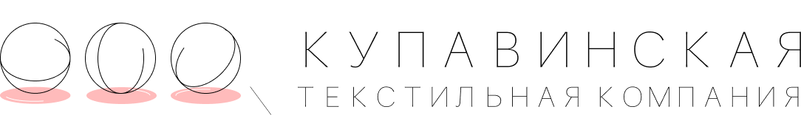
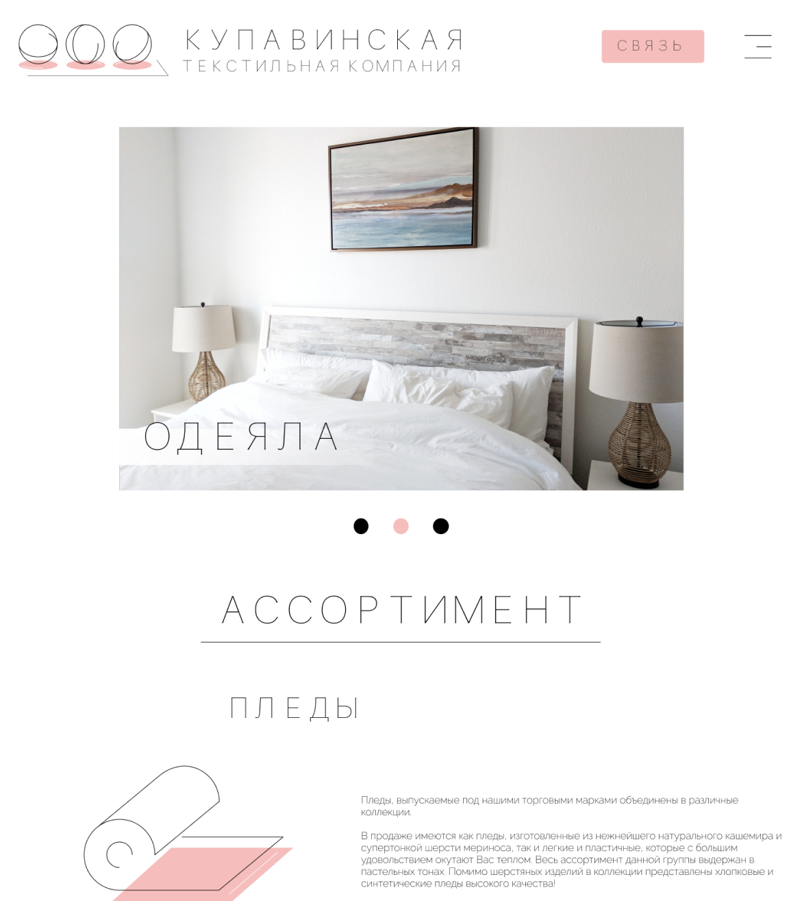

О кейсе
Текстильный завод «Купавническая Текстильная Компания» обратился к нам с просьбой переработать фирменный стиль и мультилендинг в 2020 году. Задачей было разработать современный дизайн для сайта, который бы отвечал нынешнем стандартам разработки интернет-ресурсов, и технически его реализовать.
Для фирменного стиля мы решили выбрать тонкий стиль рисовки и утонченный прямой шрифт, которые отсылают нас к основному инструменту текстильного производства - нитям и иголке. Иконки для сайта были созданы вручную нашими дизайнерами индивидуально под бренд.

Сайт был разработан с применением новейших технологий в верстке, весь бэкенд был разработан нами индивидуально для компании.
